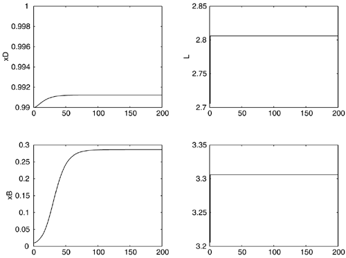

| [ Team LiB ] |
|
M13.7 Nonlinear EffectsThe results presented in previous sections are purely linear phenomena. In addition, distillation columns have important nonlinear effects. For example, even an infinite reflux rate (requiring an infinite vapor boil-up rate) will yield a mole fraction of the light component in the distillate that is less than 1.0. If the steady-state value of the distillate composition is 0.99, it can increase by less than 0.01, yet it can decrease to almost as low as the feed composition of 0.5. The range for increasing purity is then much smaller than the range for decreasing purity. Figures M13-8 and M13-9 show small open-loop changes in the manipulated inputs. The reader should perform additional small open-loop changes to verify that the outputs do not change much when the purity is increasing but can change tremendously when the purity is decreasing (Additional Exercise 5). Figure M13-9. Responses to a increase in reflux (2.706–2.806) and vapor (3.206–3.306) rates. Because of nonlinear effects, a controller designed at setpoint may not operate well when the setpoint is significantly changed. The reader is encouraged to perform SISO control simulations (Additional Exercise 6) and multiple loop simulations (Additional Exercise 7). |
| [ Team LiB ] |
|